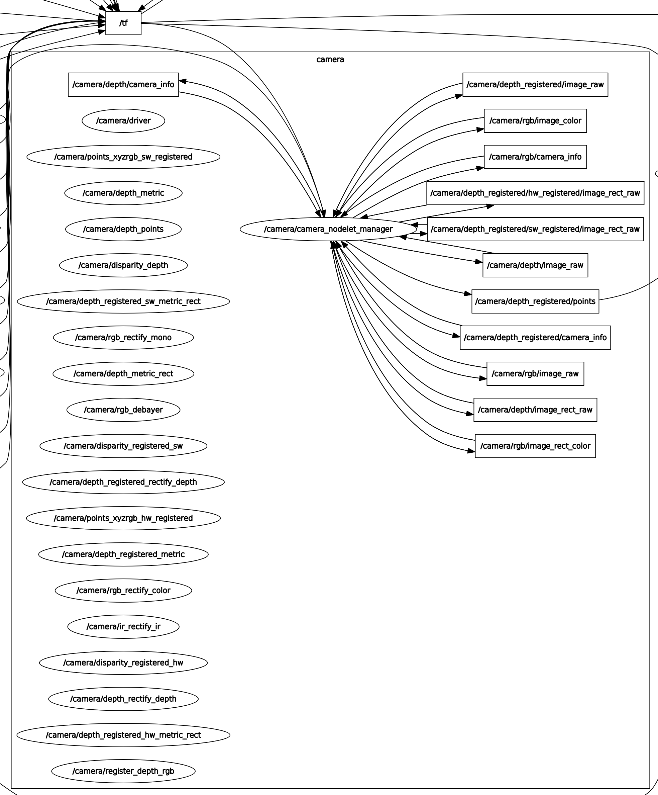
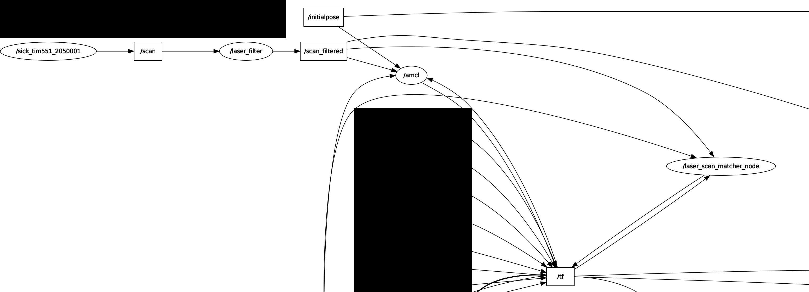
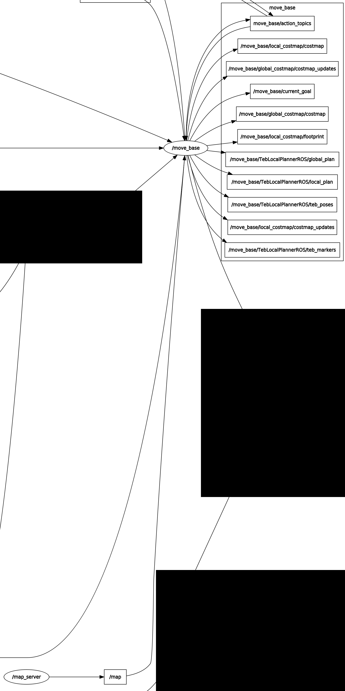

1. Development Guide
The software components written for Willy The Robot are diverse but kept to three major languages. These are Python, C++ and Javascript. The following guide shall explain general instructions for developing in each language within the project.
1.1. Prerequisites
1.1.1. General
Knowledge of the Publisher/Subscriber model within ROS is required, as it will simplify the process of reading and sending messages from your new script to the various components such as the navigation stack.
You will also need a coding IDE or (text) editor. Git + a client interface (eg. SourceTree or Gitkraken) is necessary in order to "push" and "pull" the existing code from the Github Repository.
1.1.2. C++ Development
C++ scripts, nodes and/or applications are built using the Catkin environment within ROS. You can find more information within the tutorials upon the ROS wiki.
Generally, you will start with developing a node in a catkin package, which needs to be created via the following commands, this must be done within the catkin workspace;
cd ~/catkin_ws/
catkin_create_pkg <your new package>
cd <your new package>To compile the packages within the workspace, it is recommended to run the following commands in order. The -j4 option tells the compiler how many CPU cores can be used. By default, this is set to 2, but the Raspberry Pi 3b+ has four cores available to utilize.
catkin_make clean
catkin_make -j4
catkin_make installAn alias for this process is available, type the command: catbmi (Build, Make, Install) and the list above will be run automatically in order.
Important to note: Compilation on a Raspberry Pi can often result in the OS running out of (virtual) memory. To mitigate this, it is urged to use a spare 4GB or larger USB drive as swap space. The following commands will let you set this up, but do note that administrative privileges are required and that the USB drive could experience strain when being used as a makeshift RAM stick.
First, connect the USB drive to the Raspberry Pi and use fdisk to view all connected storage drives.
sudo fdisk -lThe USB drive will appear as \dev\sda or derivative below the list:
Disk /dev/sda: 7.5 GiB, 8068792320 bytes, 15759360 sectors
Units: sectors of 1 * 512 = 512 bytes
Sector size (logical/physical): 512 bytes / 512 bytes
I/O size (minimum/optimal): 512 bytes / 512 bytes
Disklabel type: dos
Disk identifier: 0x00000001
Device Boot Start End Sectors Size Id Type
/dev/sda1 2048 7372799 7370752 3.5G c W95 FAT32 (LBA)
/dev/sda2 7372800 15757311 8384512 4G c W95 FAT32 (LBA)Note that this USB drive is divided in two partitions, the first is usable for transferring files with, the second one is to be used as swap space and would therefore not be usable on regular PC’s.
To initiate a partition as swap space, use the following command:
| Any disk or partition manipulation command will risk losing all files on the partition or drive itself, exercise caution and make a back-up of any important files off the drive. |
sudo mkswap /dev/sda2Then, to initiate the newly created swap space, turn it on:
sudo swapon /dev/sda2
This setting does not persist through reboots, ergo; you will have to use swapon every time the Raspberry Pi has been turned off or restarted.
|
Using the process monitor htop, we can see if the swap space has been successfully added:
1 [ 0.0%] Tasks: 60, 56 thr; 1 running
2 [ 0.0%] Load average: 0.00 0.00 0.03
3 [|| 4.5%] Uptime: 00:19:06
4 [ 0.0%]
Mem[||||||||||||||| 155M/876M]
Swp[ 0K/4.00G] <-- That's our swap drive!| Once a swap partition has been activated, DO NOT DISCONNECT THE USB DRIVE. If the USB drive is disconnected before turning swap off, the system will become inoperable until it is rebooted. |
Once you’re finished with compiling your packages, you can use sudo swapoff /dev/sda2 to safely disconnect the USB drive.
1.1.3. Python Development
The benefit of Python is that it lets you write and integrate small scripts quicker by skipping the need to compile packages, but it is still recommended to do so if you want to integrate the script as a node within ROS.
Running python scripts could simply be done by either navigating to the containing directory or to name the path immediately:
# Running from the directory
cd ~/Documents/willy/demo_script
python demo_script.py
# Running from the path
python ~/Documents/willy/demo_script/demo_script.py1.1.4. Social Interaction Node
The following instructions are relevant to development on/for the Social Interaction Node.
-
You will need basic knowledge of Node.js, Git and ROS
-
Install Git & Editor
https://code.visualstudio.com/ -
Install NodeJS
https://nodejs.org/en/download/ -
Install Sails
npm install sails -g -
If on Windows:
-
Install Ubuntu
-
Go to Microsoft store
-
Search for 'Ubuntu'
-
Click get/install
-
-
Install ROS
-
Follow ROS Kinetic installation + (this might take some time) http://wiki.ros.org/kinetic/Installation/Ubuntu
sudo apt-get install ros-kinetic-desktop-full -
And enviroment setup
echo "source /opt/ros/kinetic/setup.bash" >> ~/.bashrc source ~/.bashrc -
Test the installation running ROS
roscore -
Done for now
(ctrl+c)
-
-
1.2. Github
-
Invite your personal Github account to access Windesheim-Willy repos https://github.com/orgs/Windesheim-Willy/people
-
Clone Git Repo
git clone https://github.com/Windesheim-Willy/repo-name -
Switch to test branch
git checkout -b origin/test
1.3. Compilation
Compilation is done via catkin. This is done to create a rospackage so that node.js can run in a ROS enviroment.
cd WWEB/src
npm install
cd ..
source /opt/ros/kinetic/setup.bash
catkin_make1.4. Testing/Debugging
Run without ros:
cd WWEB/src
sails lift (or node app.js)Run with Ros:
-
Start Roscore
-
Open a terminal (Ubuntu app on windows) -
cd WWEB source devel/setup.bash roscore
-
-
Run webplatform
-
Open a terminal (Ubuntu app on windows) -
cd WWEB source devel/setup.bash rosrun willyweb start.sh
-
|
The rosrun command might not have acces to port 80. For this to work use sudo -s |
1.5. Running Scripts
In the same manner as you would do Testing/Debugging , you can also run scripts. Scripts are located in the folder 'WWEB/src/scripts'.
-
Start Roscore
-
Open a terminal (Ubuntu app on windows) -
cd WWEB source devel/setup.bash roscore
-
-
Run sending script
-
Open a terminal (Ubuntu app on windows) -
cd WWEB source devel/setup.bash rosrun willyweb scripts/send.js
-
-
Run receive script
-
Open a terminal (Ubuntu app on windows) -
cd WWEB source devel/setup.bash rosrun willyweb scripts/receive.js
-
|
Rosrun makes it possible to communicate with ROS because it is now run as a ROS package |
|
The 'start.sh' script consist of a simple run script which launches the webplatform |
Unresolved directive in index.adoc - include::Design-guide.adoc[]
Unresolved directive in index.adoc - include::Driving-Willy.adoc[]
2. Willy Wiki
This wiki was set up to increase the transferability of the project. Everything you need to start working on this project is documented here. Detailed documents are referenced trough the wiki if you need more information.
2.1. Introduction
The wiki is set up using AsciiDoc, TravisCI & Github pages. In practice we use AsciiDoc as source code, TravisCI to convert to html/pdf and Github Pages for publishing the website. This is visually shown in the image below, this is taken from the tutorial we followed.

2.2. Why AsciiDoc
Why AsciiDoc was chosen as our markdown language. During the search for a good Wiki tool, we eventually stumbled upon Github Pages. Github pages is intended to automatically publish markdown for you as a HTML site and you can add more functions by using Jekyll. However, limitations in Markdown where quickly found and the Jekyll implementation made if far more complex due to different plugins. That’s why it is decided to use AsciiDoc at it’s raw form.
This is the main advantage of using Markdown. While you can use plugins, its main functionality makes it the perfect language for creating a Wiki. In terms of markdown languages you can follow this list as a rule of thumb:
-
Markdown (MD)
-
Is the most simplest markdown language out there, but is also it’s main weakness
-
-
AsciiDoc (Adoc)
-
Is more versatile in the basics and much more rich in terms of formatting and plugins
-
-
LaTex (Tex)
-
Is more professionally focused and contains a lot of functions at its core where in other markdown languages you need plugins
-
|
This should also clarify the reason that AsciiDoc is chosen as the source language of this Wiki. [Markdown vs AsciiDoc] |
2.3. How the Wiki is set up using AsciiDoc with TravisCI and Github Pages
The wiki is set up fairly easy, especially when you know your way around Github and TravisCI. So it is important to read into these topics if you don’t know what these tools mean. And for AsciiDoc you’ll learn it along the way as we did.
2.4. Conversion
As told in the introduction AsciiDoc is used as a source language, which then can be converted to whatever format you like. Most commonly HTML and PDF.
2.4.1. Travis
Travis is setup to convert all documents recursively to HTML and to PDF.
Setup
Before you can use Travis you must give travis acces to the repository, this is already done using Willy’s Github account. The following environment variables must be set for the script to work properly.
|
TravisCI is already configured for the windesheim-willy.github.io/WillyWiki/ repository. No additional configuration is required. ===== How-to Config The config file used by TravisCI is travis.yml. If you are not familiar with Travis it basically asks you for the following:
For this script a Docker container is used specially made for Asciidoctor, the tool used for AsciiDoc conversion. You do not need any docker knowlegde to use this script because it uses a readymade Docker container. In this container the asciidoctor commands are executed. Currently the Travis Config is setup as follows: Setup: services:
- docker
Before: Execution: With docker it looks like this in the travis.yml |
Because these commands do not allow for recursive generation more than one folder deep some more lines are added to make sure the Archive folder is converted. A better fix still need to be implemented.
If the build is failing probably a root heading is used somewhere. This can cause conflicts with the sidebar configuration and is only used in the welcome document.
= This is a root heading
== This heading should be used troughout the wiki for the main chaptersAfter:
Your general logging
after_error:
- docker logs
after_failure:
- docker logsThe publishing to Github Pages
after_success:
- find . -name '*html' | cpio -pdm output ;
- find . -name '*png' | cpio -pdm output ;
- cd output ;
- git pushHere the output folder contains all the converted documents in HTML files, but still the images need to be copied, else the images would not be shown. Everything that is copied into the output folder is then pushed to the gh-pages branch on GitHub. As you can see in the travis.yml used some more actions are done by Travis to ensure everything works properly.
For the sidebar to scale correctly we had to manualy add the toc classes because we do not use Docbook (yet). Also see [Recursive replace].
- find -name "*.html" -exec sed -i 's/class="article toc2 toc-left"/class="article toc2 toc-left"/g' {} +For conversion from Word to AsciiDoc you can use Pandoc to convert word documents or any other format to AsciiDoc fairly easy. The following command can then be used after Pandoc is installed:
pandoc -f "input.docx" "output.adoc"To convert all documents recursively in the current folder you can use the following script: (Windows) [source, BATCH
for /r %%v in (*.docx) do pandoc -f "%%v" "%%v.adoc"
2.5. Publishing
The end result of the Travis script is a folder with html files which can then be hosted on any server even offline.
2.5.1. Github Pages
To do this we use Github Pages, as this is a free service and is perfect for hosting a static html site. It also helps keeping a history of changes.
This is configured as following: . Go to Github, WillyWiki Settings page . Scroll down to Github Pages . Set branch to 'gh-pages' and you are done

2.6. Further reading
The Asciidoctor wiki is a good source, you also might notice the familiar look https://asciidoctor.org/docs/user-manual/#introduction-to-asciidoctor
| A hardcoded sidebar is used to avoid using Docbook, it might be worth to take a look at this format as it is being used by the official sources as well. The main disadvantage of this is that it makes the Wiki one long HTML page with a large index, however for PDF export this would be fabulous. See Asciidoctor Wiki as an example. |
2.7. References
-
Markdown vs AsciiDoc Asciidoctor, Markdown vs AsciiDoc
-
Recursive replace Stackoverflow, Recursive replace
3. ROS Introduction
3.1. An introduction
As a requirement from the product owner, ROS is used as framework on Willy. ROS, the Robot Operating System, is a flexible software framework for use in robots. It consists of a collection of libraries, tools and conventions that provide basic infrastructure to communicate between different parts of the robot.
In the case of Willy, ROS is especially handy because Willy is made with a modular design. All modules can be removed without disrupting the other functionalities of Willy. For example, when the web interface is removed, Willy is still able to drive, but with another module as for example the keyboard controller. Or the removal of the motor driver makes Willy still able to interact with public.
3.2. Nodes
A node in ROS can be seen as a module. It is an executable that communicates through ROS to other nodes to send and receive data. A node can be for example a c++ application, or a piece of Python code, or even an Arduino connected with USB running code. A piece of information a node receives or sends is called a message.
| More information can be found at http://wiki.ros.org/ROS/Tutorials/UnderstandingNodes |
3.3. Topics
A topic is a bus over which nodes can exchange data messages. A topic always has a name so that all topics can be identified clearly.

| More information can be found at http://wiki.ros.org/Topics |
To interact with a topic, two methods are used, subscribing and publishing.
3.3.1. Subscribing
Subscribing is getting data from a topic. This does require the topic to be published first. Each time a message is published on this topic, a message will be passed to all subscribing nodes containing the data within. This way a node can use this information.
For example, the move_base node will publish a message on the topic /cmd_vel with accerelation values. The motor controller is subscribed to this topic and will thus read the acceleration values, letting the robot move appropriately.
3.3.2. Publishing
Publishing is sending data to a topic. Upon starting a node, it will create the associated topics and start publishing information upon these topics. Whenever a node has new information, a message will automatically be sent to the linked topic(s), upon which the subscribers will receive and process the message.
4. ROS Tutorials
We found out the hard way, multiple times, that ROS can be quite difficult to comprehend. The principle seems rather easy, have a working network, communicate on TCP-IP and DNS name, and start coding. However, there are a variety of pitfalls where you can go wrong.
We have used multiple ROS tutorials to understand more of the technical aspects of ROS as well as the (im)possibilities it holds. Due to these tutorials we kept Willy as it was, but also gained knowledge about ROS. Therefore we strongly suggest to read and try some of the tutorials ROS provides on their webpage.
Manual
.1. What is the manual
The manual has been made to let other groups get a headstart in understanding Willy. Every time a new group started the project it was hard to get a grip on all the different aspects. In the manual these aspects have been put together so it’s a lot easier to get started. This reduces the time spent on trying to figure out how Willy works and gives a detailed discription on the different problems the last group came across.
.2. Where to find the manual
The manual is located in the drive of the last project group.
Follow this tutorial to understand the basics of Willy and where to start.
.3. The usage of this manual
To keep the other project groups up to speed that will work on the project after the current group, it is advised to update this document at the end of the project. Add all the added functionality to the manual.
ROS processes while navigating
In the figure below you can see the rqtgraph for the navigation. This rqtgraph is an overview of the topics and nodes that are active. More in-depth information below.

.1. Kinect camera
The image below shows the active nodes and topics for the Kinect camera. This camera sends different camera related data to several other nodes within the process. Most topics on the right are used in the system. Some are for visualization on the RVIZ panel and some are used by other nodes for object avoidance. The nodes on the left are active ones, but not used by the process.
The '/tf' topic publishes to the '/camera/camera_nodelet_manager' node. The node uses this information to know its position within the environment.

.2. Pointcloud to LaserScan
Below, the 'pointcloud_to_laserscan_node' node is seen. This node receives pointcloud data from the '/camera/depth_registered/points' topic. This is then converted and sent via the '/pointcloud_scan' topic. Move_base then uses this data and creates an obstacle layer that displays objects within the environment.

.3. Sonars
The nodes and topics shown below are published by the Sensor Node Raspberry Pi. The '/sonar' node publishes the '/sonar_data' topic. The '/move_base' node is subscribed to this topic and then processes this to detect and show obstacles within the environment.

.4. move_base
Below, the nodes and topics for move_base are seen. This is a very important part of the process as it controls the navigation of the robot. It shows the robot’s footprint with all sensors attached, displays the costmap on the RVIZ panel and shows all obstacles within this environment. The '/move_base' node listens to the 'move_base_simple/goal' topic. This topic is the goal that is given by a user. Move_base will then navigate towards this goal and create a local and global plan accordingly. The local plan is used to navigate and manoeuvre around obstacles in its local path. The global plan is the route calculated around all global obstacles within the static map. Once the plans are calculated, move_base will sent velocity data to the '/cmd_vel' topic which is used by the serial node (motor controller) to drive the robot.

.5. AMCL
AMCL controls the localization part of the robot. The active nodes and topics are shown below. AMCL uses the laserscan data sent by the LIDAR and compares these scans with map data to localize itself within the map. The 'laser_scan_matcher_node' node is used as visual odometry. It compares consecutive laserscans and publishes to the '/tf' topic.

.6. Map
Below, some nodes and topics from move_base and map_server are shown. Map_server is used to upload a 2D map to the process. The 'map_server' node sends this map through the '/map' topic to move_base. Move_base uses this data to create a costmap and displays this map to the RVIZ panel.
